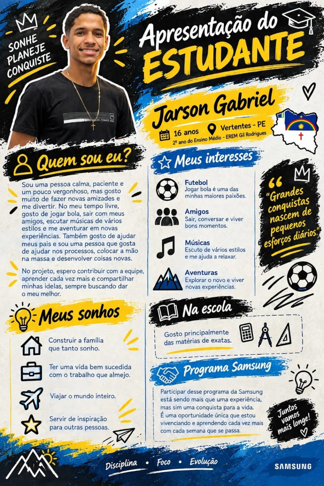
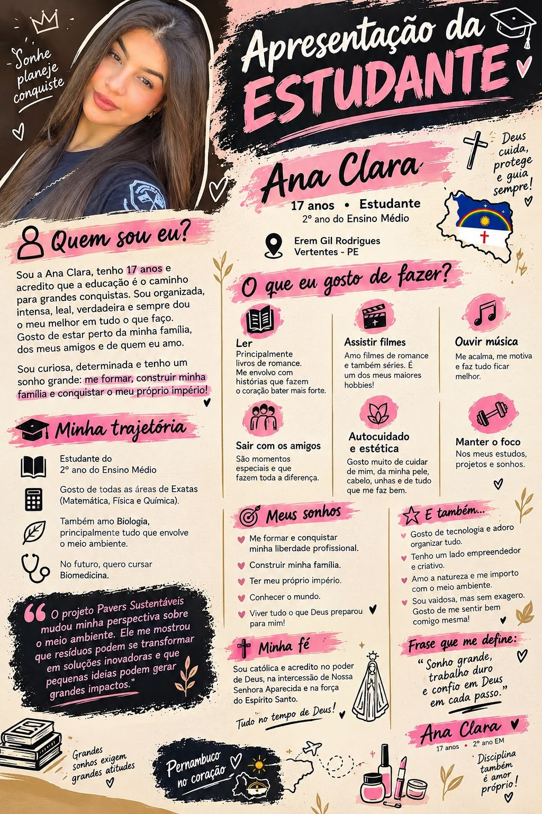
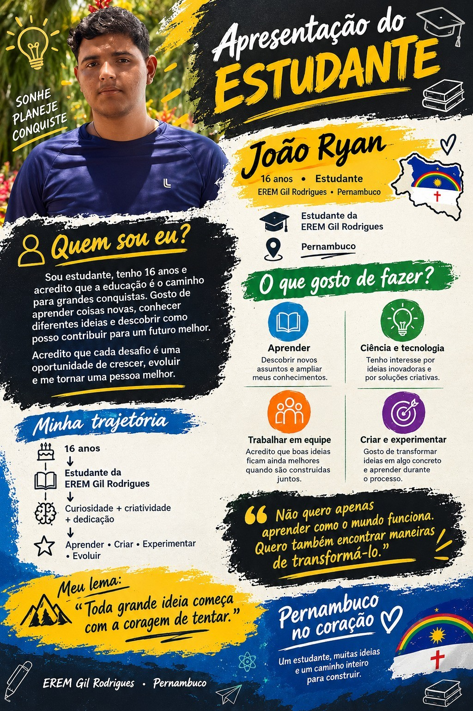
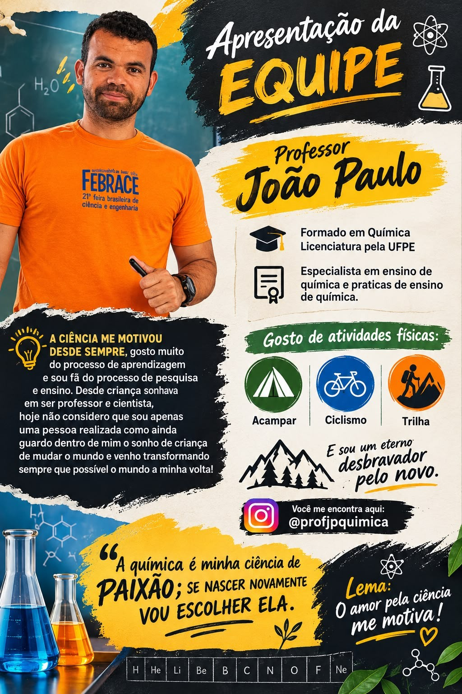

Estudante • 2º ano
Jarson Gabriel
Calmo, paciente e interessado em novas experiências. No projeto, busca contribuir com a equipe, aprender cada vez mais, compartilhar ideias e participar das atividades práticas.
Por trás do Pavers Sustentáveis existem estudantes, ideias, experiências e muita colaboração. Conheça um pouco de quem está construindo essa jornada e do professor que acompanha nosso trabalho.

Cada integrante contribui de uma forma diferente para a pesquisa, para os testes e para o desenvolvimento das ideias.
Calmo, paciente e interessado em novas experiências. No projeto, busca contribuir com a equipe, aprender cada vez mais, compartilhar ideias e participar das atividades práticas.

Organizada, curiosa e determinada. Gosta de aprender, trabalhar em seus projetos e ampliar seus conhecimentos, especialmente nas áreas de exatas e meio ambiente.

Estudante interessado em aprender coisas novas, conhecer diferentes ideias e descobrir maneiras de transformar ideias em algo concreto.
A pesquisa também conta com o acompanhamento e a experiência de quem ajuda a equipe a transformar curiosidade em investigação.

Formado em Química, com licenciatura pela UFPE, e especialista em ensino de Química e práticas de ensino de Química.
Seu trabalho une ciência, aprendizagem, pesquisa e ensino, contribuindo para que a equipe desenvolva o projeto com mais organização e olhar investigativo.